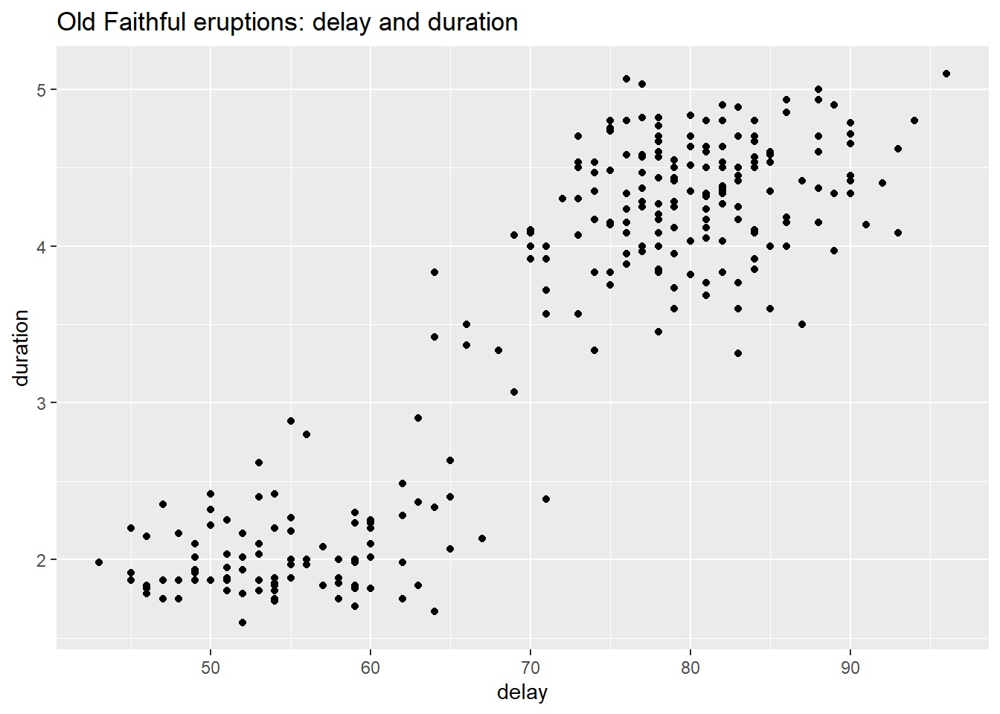
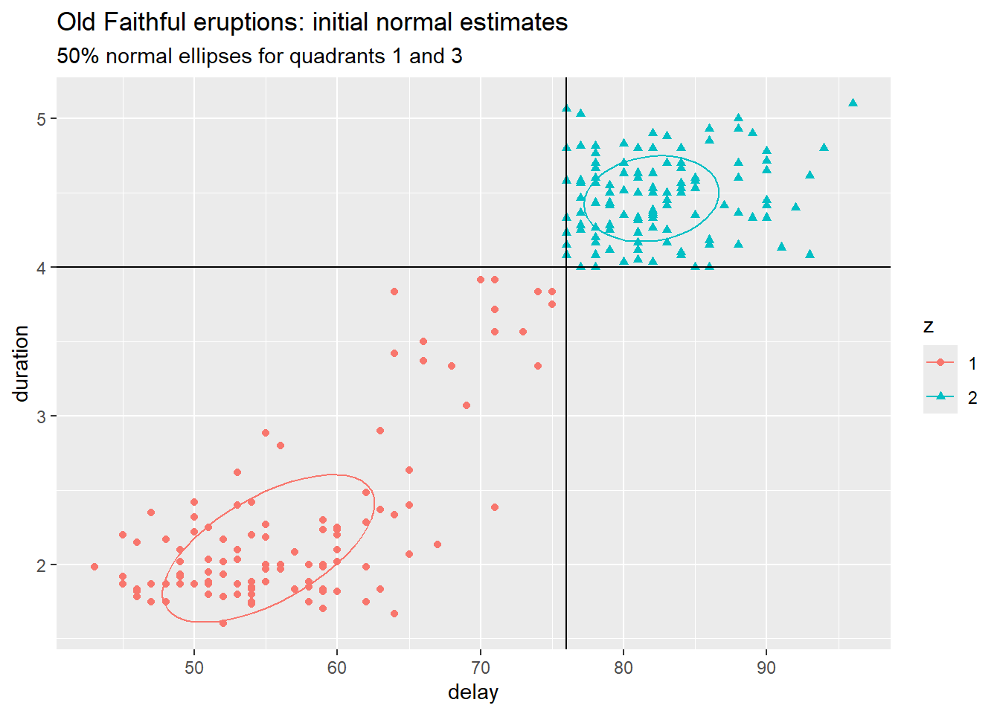
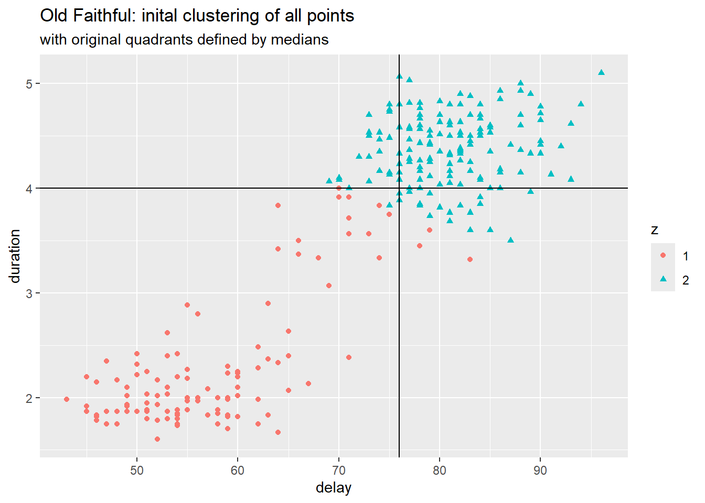
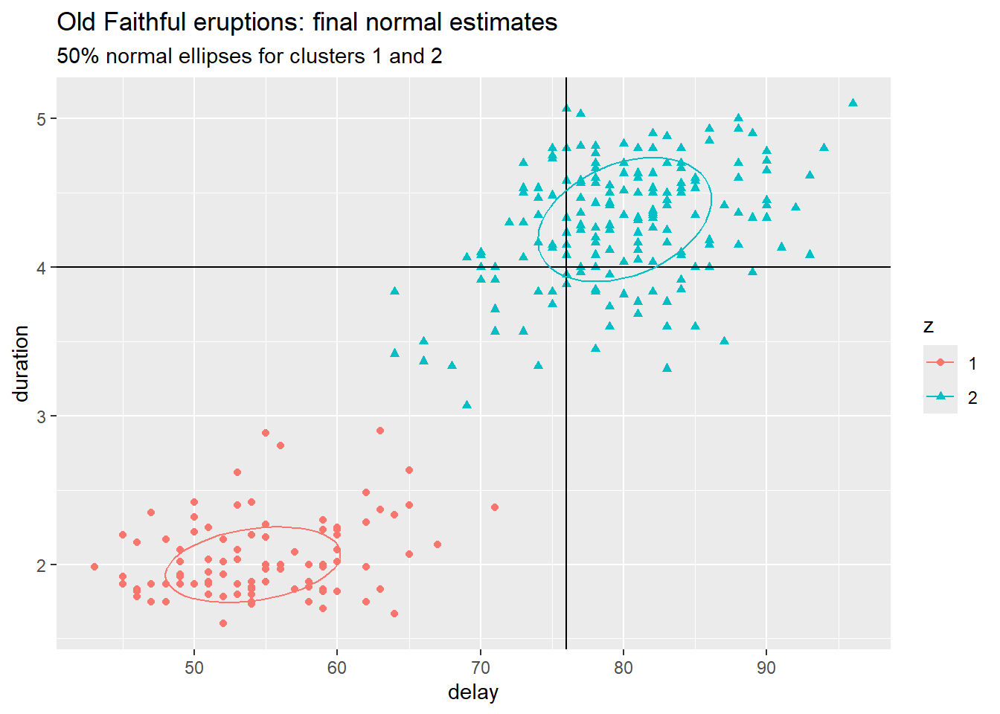

EM: the Expectation-Maximization Algorithm
Selected topics from Part 1 of Data Mining Intro
Abstract
The EM algorithm is introduced and demonstrated.
Background
Latent Dirichlet Allocation (LDA) was proposed as a method of topic modeling in 2003 in a paper by Blei, Ng, and Jordan. The method is briefly mentioned in Part 1 of the course. Several course participants requested a more detailed description. This note prepares for the requested response by introducing the EM Algorithm.
Example: Old Faithful eruptions
Delay and Duration
The figure below represents the duration of eruptions (“duration”) and the interval between eruptions (“delay”)1 of the “Old Faithful” geyser in Yellowstone National Park, Wyoming from August 1 to August 15, 1985.2
Gausian Mixture Model
The figure shows two clusters of data points.3 A plausible probability model for data-generation is the following mixture of bivariate Gaussian (normal) distributions.
\[ \begin{align} (\text{delay}, \text{duration}) &\sim p_1 \; \mathcal{N}(\mu_{\bullet}^{(1)}, \Sigma^{(1)}) + p_2 \; \mathcal{N}(\mu_{\bullet}^{(2)}, \Sigma^{(2)}) \\ \\ & \text{where } p_1 + p_2 = 1\\ \end{align} \]
Fitting a single multivariate normal distribution is straightforward, but less so for the above mixture of bivariate normal distributions. The Expectation-Maximization (EM) algorithm provides an approach for doing so, as follows.
Latent Variable: Cluster Membership
In the EM framework, we iteratively assign a cluster-membership index, \(z \in \{ 1, 2 \}\), to each data point, consistent with the following model.
\[ \begin{align} \{ (\text{delay}, \text{duration}) | Z = z \} &\sim \mathcal{N}(\mu_{\bullet}^{(z)}, \Sigma^{(z)}) \\ \\ & \text{where } z \in \{1, 2 \} \\ \end{align} \]
Then conditioning on this assignment we update the parameter estimates (the “E” step of the EM algorithm). The new set of parameter estimates yields a new estimate of the likelihood function. We then re-assign cluster-membership to maximize the updated likelihood estimate (the “M” step). The iteration terminates once the magnitude of changes falls below a prescribed threshold.
Initial Estimates
Based on the preceding figure we adopt the following initial estimates of the parameters.
Calculate the respective medians of the (
delay,duration) variables.For each data point determine whether the
delayvalue is less than the median of all observeddelayvalues. Similarly determine whether thedurationvalue is less than the median of all observeddurationvalues.Based on these inequalities, categorize each (
delay,duration) data point as belonging to one of four groups: (lower, lower), (lower, upper), (upper, lower), (upper, upper).Restrict attention to the (lower, lower), and (upper, upper) groups. Within this restricted set of data points calculate the sample averages and covariance matrices for each of the two groups. Use these as initial estimates of \((\mu_{\bullet}^{(1)}, \mu_{\bullet}^{(2)})\) and \((\Sigma^{(1)}, \Sigma^{(2)})\).
The table below summarizes the groups delineated by the respective medians of (delay, duration).
| delay_low | duration_low | count | delay_mean | duration_mean | delay_sd | duration_sd | dd_cor |
|---|---|---|---|---|---|---|---|
| FALSE | TRUE | 22 | 81.1 | 3.7 | 3.5 | 0.2 | -0.2 |
| TRUE | TRUE | 112 | 56.6 | 2.2 | 7.7 | 0.6 | 0.7 |
| FALSE | FALSE | 116 | 82.4 | 4.5 | 4.6 | 0.3 | 0.1 |
| TRUE | FALSE | 22 | 73.0 | 4.4 | 1.9 | 0.3 | 0.6 |
Restricting attention to the groups in which (delay, duration) jointly fall either below or above their respective medians, we extract the initial parameter estimates from the table above. Variable z is the labeling of each point in the restricted data set to cluster 1 or cluster 2.
| z | count | delay_mean | duration_mean | delay_sd | duration_sd | dd_cor |
|---|---|---|---|---|---|---|
| 1 | 112 | 56.6 | 2.2 | 7.7 | 0.6 | 0.7 |
| 2 | 116 | 82.4 | 4.5 | 4.6 | 0.3 | 0.1 |
The figure below summarizes results so far. We’ve restricted attention to data points (delay, duration) such that the two variables are either both below their respective medians or else both above their respective medians. We’ve defined variable z as the grouping variable taking integer values (1, 2) in these two respective cases. For each of the two groups we’ve constructed an ellipse conforming to the sample mean vector and covariance matrix of the group. The ellipse is designed to capture 50% of the area under a bivariate normal distribution having these parameter values.

This completes the initial “E” step in the EM algorithm, the estimation of parameter values.
Log Likelihood
We now begin the initial “M” step (maximization) of the EM algorithm. Using the above parameter estimates we now assign cluster membership (variable z) to the points not yet labeled by maximizing the likelihood function, or equivalently (and more conveniently), the logarithm of the likelihood function.
In general, recall that a multivariate normal distribution having mean vector \(\mu_{\bullet} \in \mathbb{R}^m\) and covariance matrix \(\Sigma\) has likelihood function equal to the product of the multivariate normal density evaluated at each observation vector, say \(x_{\bullet}^{(\nu)}\), (that is, at each row of the design matrix \(X\)).
\[ \begin{align} \mathcal{L}(X, \mu_{\bullet}, \Sigma) &= \prod_{\nu = 1}^n \mathcal{N}(x_{\bullet}^{(\nu)} - \mu_{\bullet}, \; \Sigma) \end{align} \]
Taking the natural logarithm of both sides of this equation, we obtain the log-likelihood function.
\[ \begin{align} \mathcal{l}(X, \mu_{\bullet}, \Sigma) &= \sum_{\nu = 1}^n \log_e(\mathcal{N}(x_{\bullet}^{(\nu)} - \mu_{\bullet}, \; \Sigma)) \\ &= -\frac{m}{2} \log_e(2 \pi) - \frac{1}{2}\log_e(\det{\Sigma}) - \frac{1}{2} \sum_{\nu = 1}^n (x_{\bullet}^{(\nu)} - \mu_{\bullet})^{\intercal} \; \Sigma^{-1} (x_{\bullet}^{(\nu)} - \mu_{\bullet}) \\ \end{align} \]
Consequently, fitting parameters \(\mu_{\bullet}\) and \(\Sigma\) to the design matrix \(X\) via maximum likelihood amounts to minimizing the sum of quadratic forms on the right side of this equation. (Each term in the sum is referred to as the squared Mahalanobis distance between the observation vector and the mean vector.)
\[ \begin{align} (\hat{\mu}_{\bullet}, \hat{\Sigma}) & = \arg \min \sum_{\nu = 1}^n (x_{\bullet}^{(\nu)} - \mu_{\bullet})^{\intercal} \; \Sigma^{-1} (x_{\bullet}^{(\nu)} - \mu_{\bullet}) \\ \end{align} \]
which yields the sample mean and a variant of the sample covariance matrix.
\[ \begin{align} \hat{\mu}_{\bullet} & = \frac{1}{n} \sum_{\nu = 1}^n x_{\bullet}^{(\nu)} \\ \\ \hat{\Sigma} & = \frac{1}{n} \sum_{\nu = 1}^n (x_{\bullet}^{(\nu)} - \hat{\mu}_{\bullet}) (x_{\bullet}^{(\nu)} - \hat{\mu}_{\bullet})^{\intercal} \\ \end{align} \]
For the Old Faithful data, however, we propose a mixture of two distnct normal distributions, that is, two clusters in which the cluster to which each data point belongs is unknown.
Having estimated the normal parameters for clusters 1 and 2, we now label each data point as belonging to the cluster to which it is closest, in the sense of Mahalanobis distance. The results are shown in the next figure.

This completes the initial maximization step. The table below shows the revised summary statistics per cluster now that the initial assignment to clusters has been completed.
| z | count | delay_mean | duration_mean | delay_sd | duration_sd | dd_cor |
|---|---|---|---|---|---|---|
| 1 | 115 | 57.1 | 2.3 | 8.4 | 0.6 | 0.7 |
| 2 | 157 | 81.0 | 4.4 | 5.3 | 0.3 | 0.1 |
EM Iterations
We illustrate the iterations of the EM algorithm using function mvnormalmixEM() in R package mixtools. We provide the function with our initial estimates of normal parameters.
em_out <- faithful_tbl |>
mixtools::mvnormalmixEM(
lambda = c(0.5, 0.5),
mu = list(
# delay, duration
c(56.6, 2.25), # (lower, lower)
c(82.4, 4.47) # (upper, upper)
),
sigma = list(
# (lower, lower)
matrix(
nrow = 2, ncol = 2,
data = c(
59.7, 3.27,
3.27, 0.35
)),
# (upper, upper)
matrix(
nrow = 2, ncol = 2,
data = c(
21.5, 0.19,
0.19, 0.08
))
),
verb = TRUE
)iteration= 1 diff= 41.60226 log-likelihood -1168.518
iteration= 2 diff= 14.54077 log-likelihood -1153.978
iteration= 3 diff= 12.21481 log-likelihood -1141.763
iteration= 4 diff= 9.461094 log-likelihood -1132.302
iteration= 5 diff= 1.962679 log-likelihood -1130.339
iteration= 6 diff= 0.0717014 log-likelihood -1130.267
iteration= 7 diff= 0.003089365 log-likelihood -1130.264
iteration= 8 diff= 0.000168951 log-likelihood -1130.264
iteration= 9 diff= 9.661982e-06 log-likelihood -1130.264
iteration= 10 diff= 5.582749e-07 log-likelihood -1130.264
iteration= 11 diff= 3.233686e-08 log-likelihood -1130.264
iteration= 12 diff= 1.874241e-09 log-likelihood -1130.264
number of iterations= 12 Reports from each iteration were requested by setting function parameter verb = TRUE (verbose). The estimated log-likelihood is shown for each iteration, along with the change in that value from the previous iteration.
The final estimates of the normal parameters are shown in the table below, and illustrated in the figure below.
| z | count | delay_mean | duration_mean | delay_sd | duration_sd | dd_cor |
|---|---|---|---|---|---|---|
| 1 | 97 | 54.5 | 2.0 | 5.8 | 0.3 | 0.3 |
| 2 | 175 | 80.0 | 4.3 | 6.0 | 0.4 | 0.4 |

Closing Remarks
Several papers present the mathematics underlying the EM algorithm, and one can also find tutorials that illustrate the convergence of the algorithm.
Resources
Maximum-likelihood estimation of the parameters of a multivariate normal distribution by T.W. Anderson and I. Olin, 1985. Linear Algebra and its Applications, Volume 70, pp 147-171.
Maximum Likelihood from Incomplete Data via the EM Algorithm, by A.P. Dempster, N.M. Laird and D.B. Rubin, JRSS(B), 1977
Expectation–maximization algorithm - Wikipedia
The EM Algorithm Explained blog by Chloe Bi, 2019
Footnotes
“Delay” here refers to the length of time preceding the current eruption. The (
delay,duration) variables are recorded in minutes.↩︎There are two prominent
Rpackages representing the Old Faithful measurements during August, 1985. TheMASS::geyserdata set of 299 observations includes nocturnal measurements whose duration was coded as 2, 3 or 4 minutes, having originally been described as ‘short’, ‘medium’ or ‘long’. Thedatasets::faithfuldata set of 272 measurements, shown in the figure, excludes 27 of these nocturnal measurements.↩︎Old Faithful eruptions are conjectured to occur in 2 distinct temporal patterns due to the presence of an upper and lower chamber beneath the vertical column (tube) that forms the geyser.↩︎